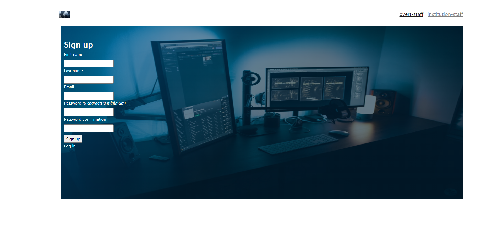
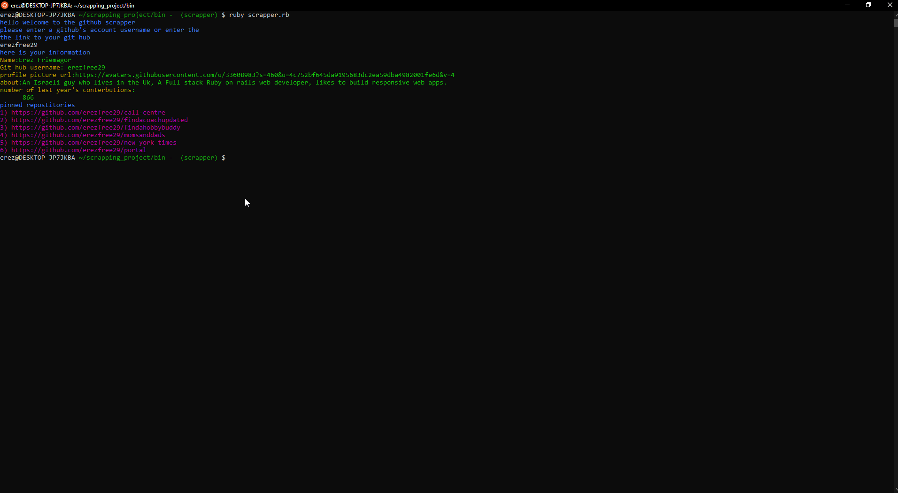

Projects
Find a hobby buddy

A Ruby on rais AirBandB style app for finding a buddy to share a Hobby with
Grouping payments
.png)
The app will enable users to monitor their payments.
-User can-Sign up, Sign in, Sign out -User can create a Group while uploading a logo -Users can log transactions for any group created. -User can view all groups(groups index) , where last for transactions for each group is shown(using will_paginate gem) -User can view each group
and all its transactions(using will_paginate gem) -User can log an external one-off transaction -User can view all submitted transaction.
Edication Institutions Management App

Staff Management App – An app that handles the access of institution staff and overt staff to the system. Built with: (Rails, Ruby on Rails, jQuery, HTML5, CSS,
GitHib Scrapper
The scrapper is a script file that was built in order to pull essential data of a Github's user from Github. The user will be asked by the terminal to enter either a git hub username or a link to the git hub profile.Provided that the scrapper has confirmed that the user account or the link is valid(otherwise, the user will be asked to re-enter the input) the scrapper will
1)Output to the terminal essential information about the account 2)save that information into a data.csv file
Mobile Football Api App

A mobile app that fetches information from the https://www.scorebat.com API ,It displays recent matches of Europe's top leagues, clicking on an image will link the user to a video of the match.Additional description of the project and its features.
Space Invadors

This is a React web application for a company that provides commercial and scientific space travel services
Math Magicians

Math magicians" is a website for all fans of mathematics. It is a Single Page App (SPA) that allows users to:Make simple calculations. Read a random math-related quote.
The app is being built
To do list

This app will allow the user to -create a list of taks. -reorder the list of tasks. -edit a task. -delete a task. -delete multiple tasks.tasks are to be save in the local storage of the browser.To do list Odin project The app demonstrates the use of NPM, Webpack, and Javascript.
the content in the webpage is produced almost purely by Javascript usage on a single HTML file. The app allows toy to create a to do list,edit and remove tasks and mark them as complete.